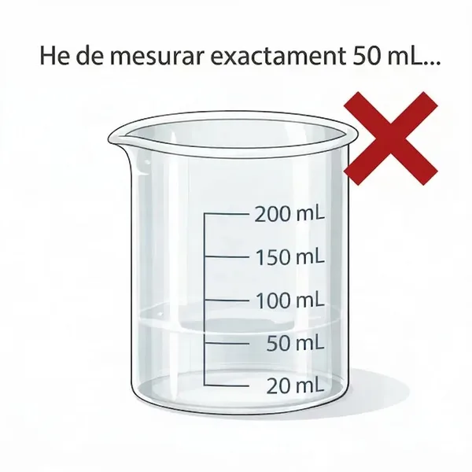
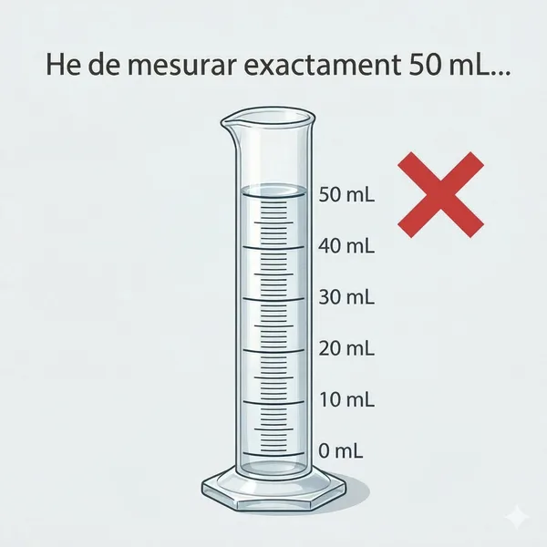
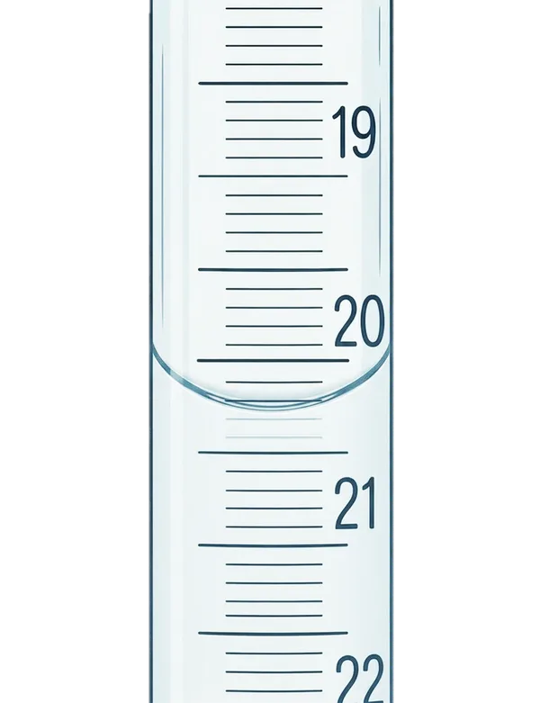

Per què importa mesurar bé un volum?
Al laboratori fareu servir la bureta per mesurar el volum de valorant que afegiu a cada mostra. El resultat de la pràctica depèn directament d'aquest volum — per això cal saber llegir-lo bé i entendre la precisió de cada instrument.
Al laboratori hi ha molts recipients de vidre: vasos, provetes, matrassos, pipetes, buretes. Tots contenen líquid, però no tots mesuren igual. Saber quin material escollir per a cada situació és una de les competències bàsiques que es valoren en aquestes pràctiques. Vegem quins serveixen per mesurar i quins no.
Com NO s'ha de mesurar

El vas de precipitats NO mesura
Les marques del vas de precipitats són orientatives — serveixen per saber aproximadament quant líquid hi ha, però l'error pot ser del 10% o més. Si hi poseu "20 mL", podrien ser 18 o 22 mL. Per a un càlcul, això és inacceptable.

La proveta: millor, però no prou
La proveta té divisions més fines, però l'error és d'±1 mL. Per afegir aigua o un reactiu en excés és suficient, però per mesurar un volum que apareixerà en un càlcul, no és prou precisa.
Llavors, què fem servir?
Material volumètric de precisió. Cada un té el seu paper.
La jerarquia de precisió
Regla senzilla
Si el volum que mesureu apareix en un càlcul → material de precisió (pipeta aforada, bureta, matràs aforat). Si només esteu afegint aigua o un reactiu en excés → proveta o vas.
Com es llegeix un volum?
Abans de parlar de cada material, cal saber llegir correctament.

El menisc i l'error de paral·laxi
L'aigua forma una corba (menisc) quan toca el vidre. La lectura correcta és sempre la part inferior de la corba, amb els ulls al mateix nivell que el líquid.
En aquesta imatge, la part inferior del menisc cau entre les marques de 20,7 i 20,8 mL. Com que està aproximadament al mig, estimem el segon decimal: la lectura correcta és 20,75 mL. La bureta té divisions cada 0,1 mL, però la vostra vista us permet estimar fins a 0,05 mL — és a dir, podeu decidir si el menisc toca la línia (20,70), cau al mig (20,75) o quasi toca la següent (20,80).
Si mireu des de dalt → llegireu menys del real. Si mireu des de baix → llegireu més. Això es diu error de paral·laxi i afecta totes les lectures volumètriques.
La pipeta aforada
Què és?
Un tub de vidre amb una sola marca (l'aforament). Mesura un únic volum exacte — per exemple, exactament 20,00 mL. És el material més precís del laboratori per transferir volums.
Aspirar amb la propipeta
Mai aspireu amb la boca. Connecteu la propipeta (pi-pump) a la pipeta i aspireu el líquid fins que passi una mica per sobre de la marca d'aforament.
Ajustar a la marca
Allibereu líquid lentament fins que la part inferior del menisc sigui tangent a la marca d'aforament. Comproveu que no hi ha bombolles ni gotes a la paret exterior.
Buidar per gravetat
Deixeu que el líquid caigui per gravetat, tocant la punta a la paret del recipient. Espereu uns segons fins que deixi de rajar.
Mai bufeu l'última gota!
Veureu que queda una petita gota a la punta de la pipeta. No la bufeu. La pipeta ha estat calibrada comptant amb aquesta gota — si la bufeu, esteu afegint més volum del que toca i el vostre càlcul serà erroni.
La bureta
Què és?
Un tub de vidre graduat amb una clau de pas a la part inferior. Permet afegir volums variables amb molta precisió. El 0 és a dalt i els números creixen cap avall — perquè mesura el volum que ha sortit.
Acondicionar
Abans d'omplir, esbandiu la bureta 3 vegades amb petites porcions de la dissolució que fareu servir. Això evita que l'aigua residual dilueixi la dissolució.
Omplir i eliminar bombolles
Ompliu per dalt. Després, obriu la clau ràpidament per expulsar qualsevol bombolla d'aire de la punta. Les bombolles causen errors: quan es mouen, el volum canvia sense que hàgiu afegit res al matràs.
Llegir amb 2 decimals
La bureta de 25 mL té divisions cada 0,1 mL. Heu d'estimar el segon decimal (entre dues línies). Per exemple: si el menisc cau entre 12,3 i 12,4, estimeu 12,35.
Anoteu sempre volum inicial i volum final. El volum gastat és la diferència.
La bureta funciona com la pesada per diferència!
Igual que amb la balança, no importa des d'on comenceu. Anoteu el volum d'inici (V₁) i el de final (V₂). El volum gastat és V₂ − V₁. No cal que comenceu a 0,00 mL — de fet, és una pèrdua de temps intentar-ho.
El matràs aforat
Què és?
Un matràs amb forma de pera i coll llarg i estret, amb una marca d'aforament al coll. Serveix per preparar un volum exacte de dissolució — per exemple, dissoldre una substància en exactament 100,0 mL.
Transferència quantitativa
Dissoleu la substància en un vas amb una mica d'aigua. Després, aboqueu-ho al matràs aforat i esbandiu el vas 3 vegades amb petites porcions d'aigua, abocant cada esbandida al matràs. Així no perdreu res.
Enrasar
Afegiu aigua fins que el menisc sigui tangent a la marca. Les últimes gotes amb la piseta, gota a gota. El coll estret fa que petites variacions de volum produeixin canvis grans en el nivell — per això és tan precís.
Homogeneïtzar
Tapeu el matràs i invertiu-lo diverses vegades per barrejar bé. La concentració ha de ser uniforme a tot el volum.
Mai escalfeu un matràs aforat!
El matràs aforat està calibrat a una temperatura determinada (normalment 20 °C). Si l'escalfeu, el vidre es dilata i el volum canvia. Si necessiteu dissoldre amb calor, feu-ho en un vas de precipitats i després transferiu al matràs aforat un cop fred.
La pipeta graduada
No confongueu amb l'aforada!
La pipeta graduada té moltes marques (com una bureta petita). Serveix per mesurar volums variables — per exemple, 3,5 mL d'un reactiu. És menys precisa que l'aforada, però més versàtil. S'utilitza per afegir reactius (indicador, àcid, base) quan el volum no necessita ser extremadament exacte.